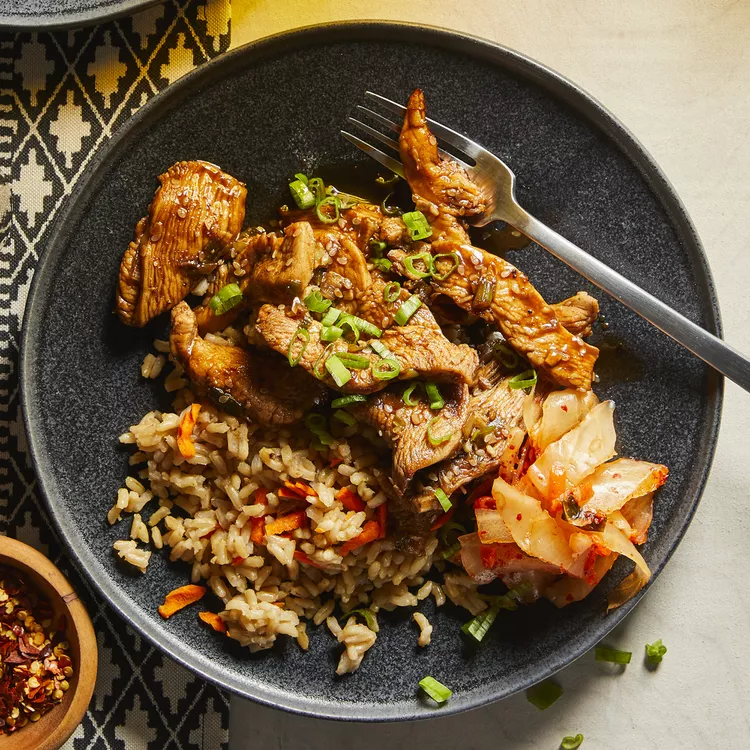

Skillet Chicken Bulgogi

Description
This bulgogi chicken is a quick-and-easy, but very tasty, meal.
You can substitute the chicken with beef or pork for variety.
It only takes 30 minutes with very few dirty dishes! Serve over rice.
Nutrient packed with 29 grams of protein and 270 calories per serving!
Ingredients
-
¼ cup chopped onion
-
5 tablespoons soy sauce
-
2 ½ tablespoons brown sugar
-
2 tablespoons minced garlic
-
2 tablespoons sesame oil
-
1 tablespoon sesame seeds
-
½ teaspoon cayenne
-
salt and ground black pepper to taste
-
1 pound skinless, boneless chicken breasts, cut into thin strips
Steps
-
Whisk onion, soy sauce, brown sugar, garlic, sesame oil, sesame seeds, cayenne pepper, salt, and black pepper together in a bowl until marinade is smooth.
-
Cook and stir chicken and marinade together in a large skillet over medium-high heat until chicken is cooked through, about 15 minutes.
Homepage